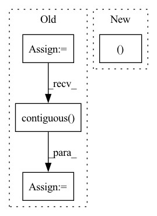

Pattern ID :5803

Before Change
def forward(self, x, rois, roi_indices):
roi_indices = torch.Tensor(roi_indices).float()
rois = torch.Tensor(rois).float()
if x.is_cuda:
roi_indices = roi_indices.cuda()
rois = rois.cuda()
indices_and_rois = torch.cat([roi_indices[:, None], rois], dim=1)
xy_indices_and_rois = indices_and_rois[:, [0, 1, 2, 3, 4]]
indices_and_rois = xy_indices_and_rois.contiguous()
// 利用建议框对公用特征层进行截取
pool = self.roi(x, indices_and_rois)
fc7 = self.classifier(pool)
After Change
self.roi = RoIPool((roi_size, roi_size), spatial_scale)
def forward(self, x, rois, roi_indices, img_size):
n, _, _, _ = x.shape
if x.is_cuda:
roi_indices = roi_indices.cuda()
rois = rois.cuda()
In pattern: SUPERPATTERN
Frequency: 6
Non-data size: 4
Instances
Fragment ID: 20429687
Project Name: bubbliiiing/faster-rcnn-pytorch
Commit Name: d456f02a402fd8cf8db1d991aa612439b3c0ffb2
Time: 2021-01-30
Author: 47347516+bubbliiiing@users.noreply.github.com
File Name: nets/classifier.py
M Class Name: Resnet50RoIHead
N Class Name: Resnet50RoIHead
M Method Name: forward(5)
N Method Name: forward(4)
M Parent Class: nn.Module
N Parent Class: nn.Module
M File Name: nets/classifier.py
N File Name: nets/classifier.py
M Start Line: 68
M End Line: 77
N Start Line: 82
N End Line: 107
'>
Before Change
def forward(self, x, rois, roi_indices):
roi_indices = torch.Tensor(roi_indices).float()
rois = torch.Tensor(rois).float()
if x.is_cuda:
roi_indices = roi_indices.cuda()
rois = rois.cuda()
indices_and_rois = torch.cat([roi_indices[:, None], rois], dim=1)
xy_indices_and_rois = indices_and_rois[:, [0, 1, 2, 3, 4]]
indices_and_rois = xy_indices_and_rois.contiguous()
// 利用建议框对公用特征层进行截取
pool = self.roi(x, indices_and_rois)
pool = pool.view(pool.size(0), -1)
After Change
self.roi = RoIPool((roi_size, roi_size), spatial_scale)
def forward(self, x, rois, roi_indices, img_size):
n, _, _, _ = x.shape
if x.is_cuda:
roi_indices = roi_indices.cuda()
rois = rois.cuda()
'>
Fragment ID: 20429686
Project Name: bubbliiiing/faster-rcnn-pytorch
Commit Name: d456f02a402fd8cf8db1d991aa612439b3c0ffb2
Time: 2021-01-30
Author: 47347516+bubbliiiing@users.noreply.github.com
File Name: nets/classifier.py
M Class Name: VGG16RoIHead
N Class Name: VGG16RoIHead
M Method Name: forward(5)
N Method Name: forward(4)
M Parent Class: nn.Module
N Parent Class: nn.Module
M File Name: nets/classifier.py
N File Name: nets/classifier.py
M Start Line: 31
M End Line: 39
N Start Line: 33
N End Line: 59
'>
Before Change
batch_size, n_sources, n_bins, n_frames = target.size()
input = input.view(batch_size, embedded_dims, n_bins * n_frames)
target = target.view(batch_size, n_sources, n_bins * n_frames)
input_transposed = input.permute(0, 2, 1).contiguous() // (batch_size, n_bins * n_frames, embedded_dims)
target_transposed = target.permute(0, 2, 1).contiguous() // (batch_size, n_bins * n_frames, n_sources)
affinity_input = torch.bmm(input, input_transposed) // (batch_size, embedded_dims, embedded_dims)
affinity_target = torch.bmm(target, target_transposed) // (batch_size, n_sources, n_sources)
affinity_correlation = torch.bmm(input, target_transposed) // (batch_size, embedded_dims, n_sources)
loss_input = torch.sum(affinity_input**2, dim=(1,2))
loss_target = torch.sum(affinity_target**2, dim=(1,2))
loss_correlation = torch.sum(affinity_correlation**2, dim=(1,2))
loss = loss_input + loss_target - 2 * loss_correlation // (batch_size,)
if batch_mean:
After Change
YY1 = YY.sum(dim=-1) // (batch_size, n_samples)
D = torch.diag_embed(1 / torch.sqrt(YY1 + eps)) // (batch_size, n_samples, n_samples)
VD, YD = torch.bmm(trans_V, D), torch.bmm(trans_Y, D) // (batch_size, embed_dim1, n_samples), (batch_size, embed_dim2, n_samples)
VDV, YDY = torch.bmm(VD, V), torch.bmm(YD, Y) // (batch_size, embed_dim1, embed_dim1), (batch_size, embed_dim2, embed_dim2)
VDY = torch.bmm(VD, Y) // (batch_size, embed_dim, embed_dim2)
loss = torch.sum(VDV**2, dim=(1, 2)) + torch.sum(YDY**2, dim=(1, 2)) - 2 * torch.sum(VDY**2, dim=(1, 2)) // (batch_size,)
'>
Fragment ID: 20429619
Project Name: tky823/dnn-based_source_separation
Commit Name: 8860d8d92de4ba4390fa89247619810b0c821fe6
Time: 2021-11-22
Author: delta9guitar97@gmail.com
File Name: src/criterion/deep_clustering.py
M Class Name: AffinityLoss
N Class Name: AffinityLoss
M Method Name: forward(4)
N Method Name: forward(4)
M Parent Class: nn.Module
N Parent Class: nn.Module
M File Name: src/criterion/deep_clustering.py
N File Name: src/criterion/deep_clustering.py
M Start Line: 19
M End Line: 34
N Start Line: 26
N End Line: 37
'>
Before Change
with torch.no_grad():
means, buckets, dists = kmeans(x, means, training=self.training, init=not self.initted)
indices = distribution(dists, window_size)
indices = indices.contiguous().view(*indices.size()[:2], -1)
routed_means = batched_index_select(expand_dim(means, 0, b), buckets)
loss = F.mse_loss(x, routed_means) * self.commitment
After Change
routed_means = batched_index_select(expand_dim(means, 0, b), buckets)
loss = F.mse_loss(x, routed_means) * self.commitment
return dists, loss
// kmeans attention class
class KmeansAttention(nn.Module):
'>
Fragment ID: 20429599
Project Name: lucidrains/routing-transformer
Commit Name: 2042adb06111339b86814500f0c389759b8f6cdf
Time: 2020-05-27
Author: lucidrains@gmail.com
File Name: routing_transformer/routing_transformer.py
M Class Name: Kmeans
N Class Name: Kmeans
M Method Name: forward(3)
N Method Name: forward(3)
M Parent Class: nn.Module
N Parent Class: nn.Module
M File Name: routing_transformer/routing_transformer.py
N File Name: routing_transformer/routing_transformer.py
M Start Line: 396
M End Line: 410
N Start Line: 367
N End Line: 384
'>
Before Change
// self.training |= self.export
if self.export:
for i in range(self.nl):
x[i] = self.m[i](x[i])
bs, _, ny, nx = x[i].shape // x(bs,48,20,20) to x(bs,3,20,20,16)
x[i] = x[i].view(bs, self.na, self.no, ny, nx).permute(0, 1, 3, 4, 2).contiguous()
return x
if self.export_cat:
for i in range(self.nl):
After Change
if self.grid[i].shape[2:4] != x[i].shape[2:4]:
// self.grid[i] = self._make_grid(nx, ny).to(x[i].device)
self.grid[i], self.anchor_grid[i] = self._make_grid_new(nx, ny,i)
y = torch.full_like(x[i], 0)
y = y + torch.cat((x[i][:, :, :, :, 0:5].sigmoid(), torch.cat((x[i][:, :, :, :, 5:15], x[i][:, :, :, :, 15:15+self.nc].sigmoid()), 4)), 4)
'>
Fragment ID: 20429565
Project Name: deepcam-cn/yolov5-face
Commit Name: dce28069b579d807dac4e694e87d3c0ee3f777ec
Time: 2021-12-17
Author: lipengbo@kanzhun.com
File Name: models/yolo.py
M Class Name: Detect
N Class Name: Detect
M Method Name: forward(2)
N Method Name: forward(2)
M Parent Class: nn.Module
N Parent Class: nn.Module
M File Name: models/yolo.py
N File Name: models/yolo.py
M Start Line: 50
M End Line: 64
N Start Line: 49
N End Line: 56
'>
Before Change
attr_data = corpus["attribute_idx"]
attr_embeddings = []
for attr_idx in range(self.attribute_num):
kth_dim_attr = attr_data[:, attr_idx]
kth_dim_embeddings = self.attr_embedder[attr_idx](kth_dim_attr)
attr_embeddings.append(kth_dim_embeddings)
attr_embeddings = torch.cat(attr_embeddings, dim=1)
// Encoder
h_c = torch.relu(self.attr_linear(attr_embeddings)).contiguous()
if self.is_gated:
h_c_1D = torch.relu(self.gate_hc_linear(attr_embeddings))
After Change
def generate_for_corpus(self, eval_data, corpus):
attr_embeddings, h_c = self.encode(corpus["attribute_idx"])
if self.is_gated:
h_c_1D = torch.relu(self.gate_hc_linear(attr_embeddings))
'>
Fragment ID: 20429676
Project Name: rucaibox/textbox
Commit Name: 09345e6c7a330c9f871f488b9eda539d233ae9a0
Time: 2021-03-08
Author: zhuohaoyu1228@gmail.com
File Name: textbox/model/Attribute/c2s.py
M Class Name: C2S
N Class Name: C2S
M Method Name: generate_for_corpus(3)
N Method Name: generate_for_corpus(3)
M Parent Class: AttributeGenerator
N Parent Class: AttributeGenerator
M File Name: textbox/model/Attribute/c2s.py
N File Name: textbox/model/Attribute/c2s.py
M Start Line: 120
M End Line: 189
N Start Line: 125
N End Line: 125